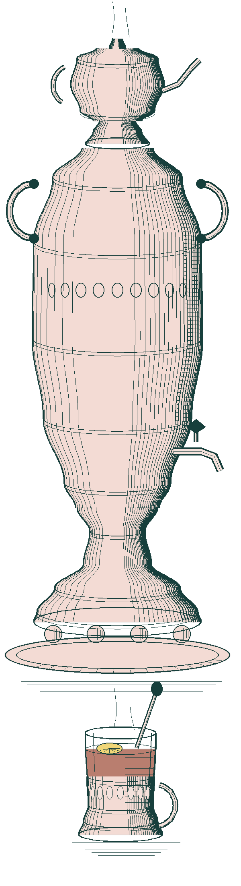

West 57th Street, New York
The Tea Room
Christmas all year round

To begin, at the table
Zakuski
Finger sandwiches5.50
Egg salad with watercress, and cucumber with cream cheese, on soft white bread. Crusts off, cut in triangles.
Red pepper dip4.25
Charred under the broiler, peeled, whipped smooth with feta, yogurt, garlic, hot chili flakes and olive oil. Sesame crackers.
Blini, red caviar9.50
Hot buckwheat pancakes, salmon roe, sour cream and melted butter.
Our guest book
The tea is strong, the room is warm, and nobody here calls me Tootsie.
Dorothy Michaels
Lunch from noon
Dinner from five
Supper until one
Dinner from five
Supper until one
RESERVED
Mr. Fields
ONE O’CLOCK, FOR TWO